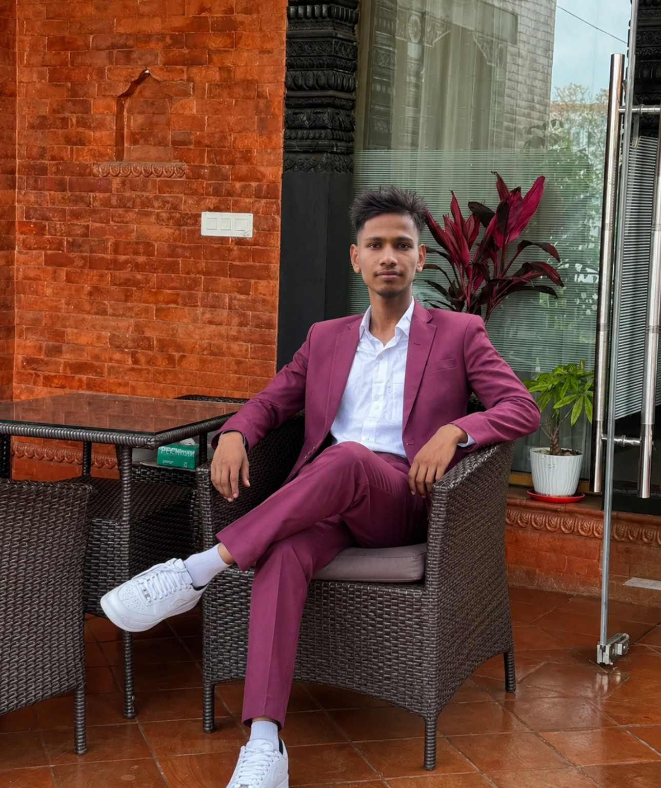

Home Vet Service
A service website concept for home veterinary support, bookings, reviews and contact management.
View project ↗I'm Dipindra Yadav, a Grade 10 student exploring web development, app development, AI, SEO and programming — with a long-term goal of becoming a cybersecurity expert.

I enjoy turning ideas into useful digital projects and learning how technology works behind the scenes. I'm currently studying in Grade 10 and using my free time to build websites, experiment with AI and improve my programming skills.
My journey is still beginning, but every project gives me another reason to learn something new.
Long-term goal: become a strong cybersecurity professional while continuing to build practical applications, websites and educational technology projects.
A service website concept for home veterinary support, bookings, reviews and contact management.
View project ↗A QR-focused web project designed around generating and managing useful QR experiences.
View project ↗New experiments in AI, programming, websites and cybersecurity will appear here.
Suggest an ideaA practical look at using AI as a learning companion without replacing your own thinking.